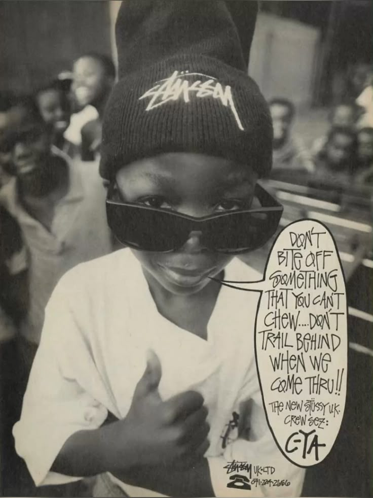
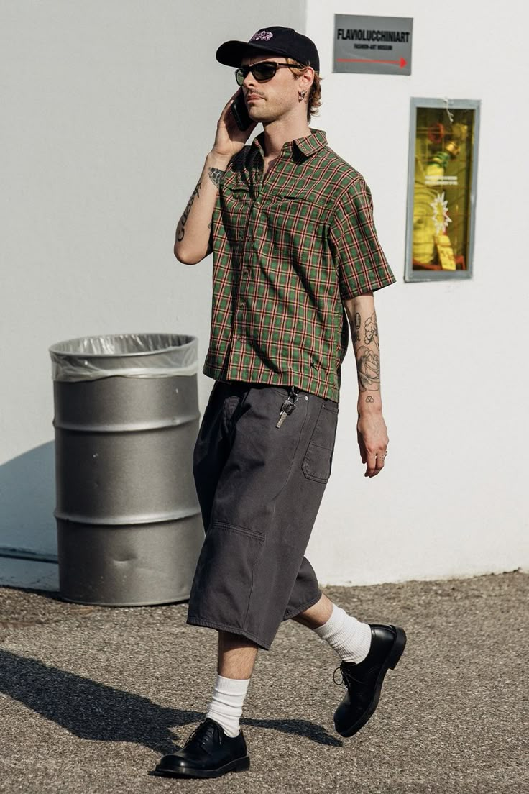

streetwear: o estilo das ruas
Originário do hip hop de Nova York, no final dos anos 1970, esse movimento de margem, cultural e ancestral se consolidou e conseguiu impactar uma indústria inteira.
Aimé Leon Dore para Drake's FW21
o que é o streetwear?
O streetwear é um estilo de moda casual e urbana que nasceu da cultura de rua, especialmente influenciado por comunidades como o skate, o hip-hop, o grafite e os esportes, principalmente o basquete e surf. Ele se consolidou como uma expressão de individualidade e identidade cultural, indo além da simples vestimenta para se tornar um movimento global.
Esse estilo ainda se destaca pela sua versatilidade, uma vez que dá para combinar um moletom casual com tênis clássicos, também se pode utilizar uma jaqueta, com gravatas, camisas e sapatos, com diferentes tipos acessórios.
origens e evolução
O streetwear começou a se formar nos anos 1980 e 1990, inicialmente na Califórnia, onde marcas de skate e surf, como Stüssy, começaram a produzir camisetas gráficas inspiradas na cultura do surfe. Ao mesmo tempo, a cena do hip-hop em Nova York popularizou o uso de tênis exclusivos, bonés e roupas largas como forma de expressão.
Nos anos 2000, marcas como Supreme, BAPE (A Bathing Ape), Off-White e Palace elevaram o streetwear para um novo patamar, tornando-se referências no segmento. O lançamento de tênis exclusivos em colaborações com grandes marcas esportivas, como Nike, Adidas e Puma, fez com que o streetwear se tornasse sinônimo de exclusividade e status.
Propaganda da marca Stüssy dos anos 90
Grafites com frases escritas pela cidade, raps desenrolando versos que contam as dificuldades de se viver no sistema opressor, músicas que ressaltam a beleza estética que não era vista nas campanhas e outdoors, e principalmente, roupas de brechó, segunda mão ou réplicas de peças de marcas famosas que eram absuradamente caras. Todos esses elementos juntos criaram o que conhecemos hoje como Street Style.
Com o passar do tempo, grandes marcas de luxo perceberam o impacto do streetwear e começaram a incorporá-lo às suas coleções. Marcas como Louis Vuitton, Balenciaga e Dior passaram a colaborar com designers de streetwear e a lançar peças inspiradas na estética urbana. O ápice dessa fusão aconteceu quando Virgil Abloh, fundador da Off-White, foi nomeado diretor criativo da Louis Vuitton em 2018, consolidando o streetwear dentro do universo da alta moda.
TCC sobre o streetwear de uma aluna da UTFPRo streetwear hoje
Hoje, o streetwear não é mais apenas um nicho; ele dominou a indústria da moda e influencia desde a cultura pop até as passarelas de luxo. O conceito de moda casual e despojada evoluiu para um mercado bilionário, com marcas constantemente lançando edições limitadas para gerar exclusividade e desejo entre os consumidores.
Plataformas de revenda como StockX e GOAT surgiram para atender a demanda por peças raras e tênis em alta demanda e de grande raridade, criando um mercado secundário onde produtos podem ser revendidos por valores muito acima do preço original.
Estilo de homens da Milan Fashion Week SS24